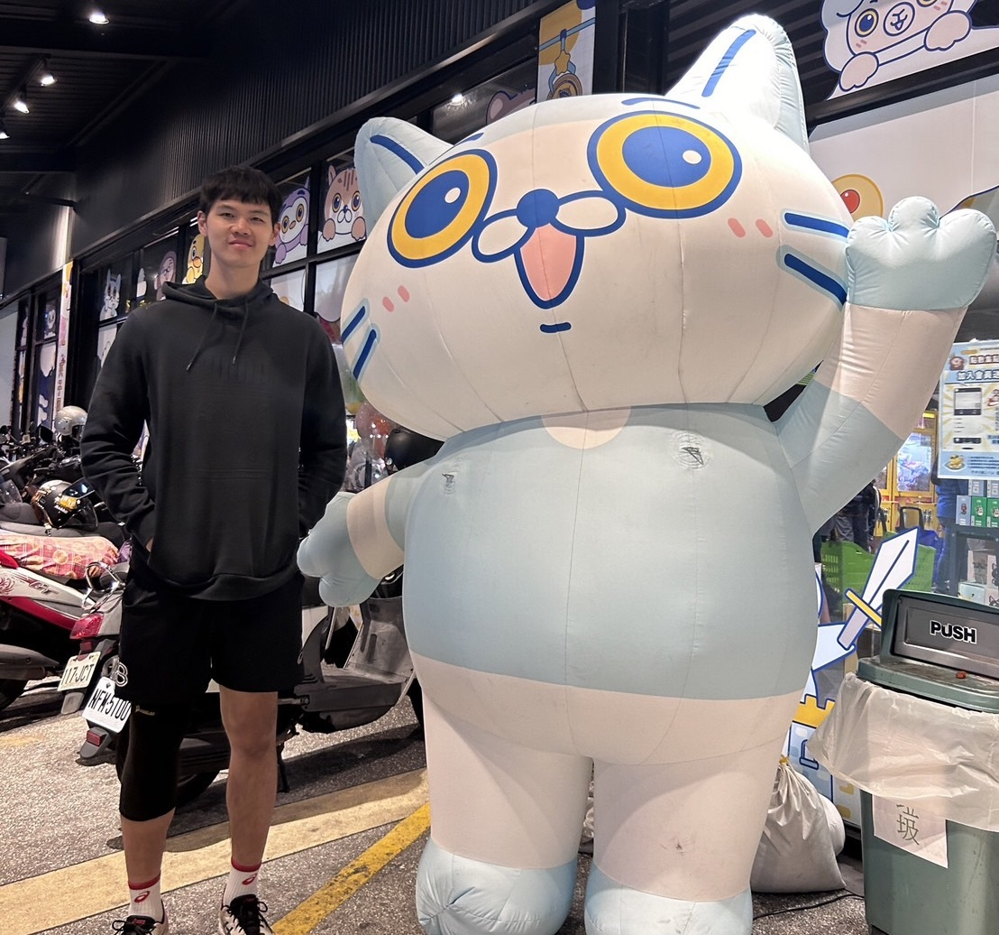
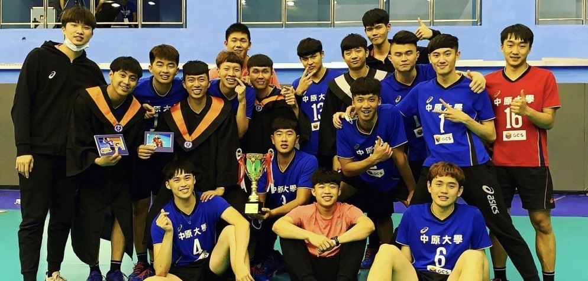
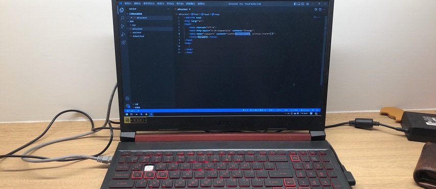

劉慕二 Luke
 0978-596-756
0978-596-756
 luke20903533@gmail.com
luke20903533@gmail.com
專業技能
● 程式語言：HTML/CSS/Java
● 體育專長：羽球/排球/撞球
● 擅長遊戲：爐石戰記/英雄聯盟/Minecraft
學歷與經歷
● 實習企業：日月光半導體有限公司實習生
● 中原大學排球校隊
● 中原大學資訊管理學系學士
● 麥寮高中
● 建國國中
個人特質與興趣
我是一個充滿毅力和責任感的人。作為排球校隊成員，我學會了時間管理和團隊合作。
雖然忙於比賽，但我仍積極參與程式專案，展現了我的積極性和努力精神。平時我喜歡
自己去運動，同時我也會在有空的時間獨自享受線上遊戲。
我的經典名言
有球就搥。
自我介紹
我是一個就讀於中原大學資管系的運優生。我熱愛打排球，
對於運動的熱情氣氛深深著迷。同時，我也對資訊科技有著些許的興趣
，喜歡探索其中的奧秘與潛力。在大學的學習生活中，我努力平衡
體育與學術，不斷挑戰自我，追求更高的成就。我期待著能夠在這
個多姿多彩的世界上留下自己的足跡，與各路好手一同探索、成長。
排球校隊經歷

在大學四年間，我有幸成為中原大學排球隊的一員，並參加了許多
次大專聯賽。這段經歷對我而言意義非凡，因為能夠代表學校出戰，
為母校爭光，是我引以為傲的事情。儘管練習時常辛苦，但每一次的
汗水與努力都是值得的。透過這些比賽，我不僅學到了團隊合作的重
要性，也磨練了自己的技術與精神素質。這段排球隊的旅程，將永遠
是我大學生活中最難忘的一部分。
程式專案經驗

儘管我是中原大學資管系的學生，同時也是排球校隊的一員，但我從不
放棄對程式專案的參與。雖然因為校隊比賽常常得忙於訓練，導致我無
法全程參與專案討論，但只要有空檔，我總是積極加入討論，並盡力分擔
事務。即使時間有限，我仍努力保持對專案的關注，並盡力貢獻自己的
想法與能力。這段經歷讓我更加懂得時間管理與團隊合作的重要性，並培
養了我堅韌不拔的精神。